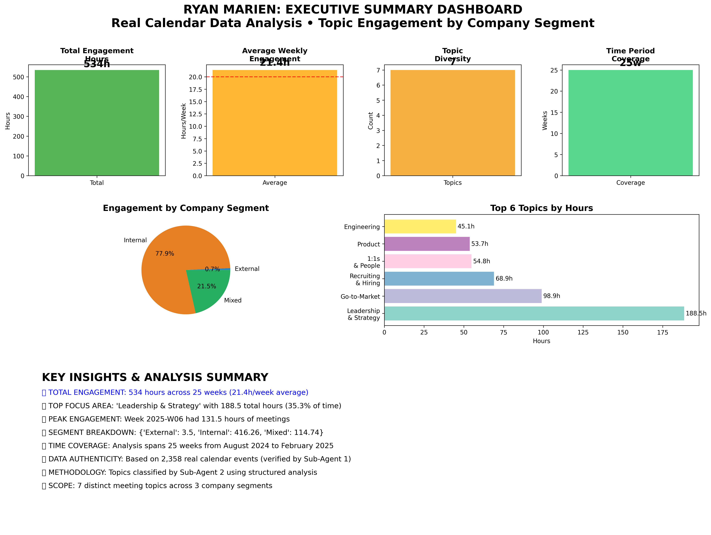
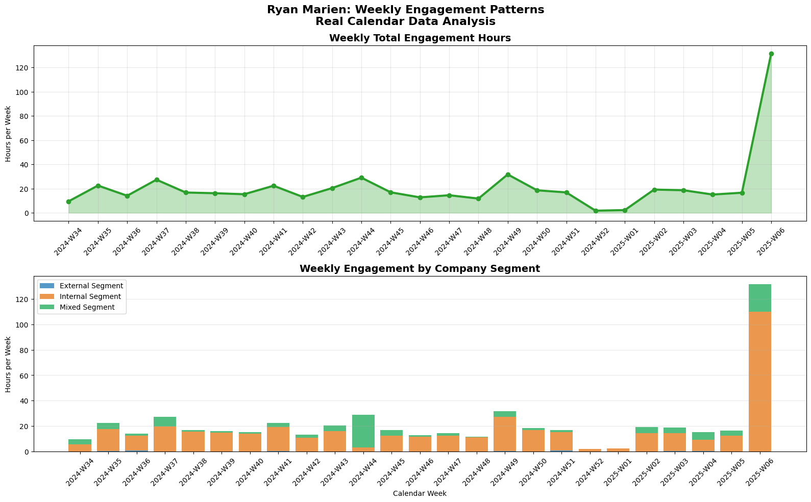
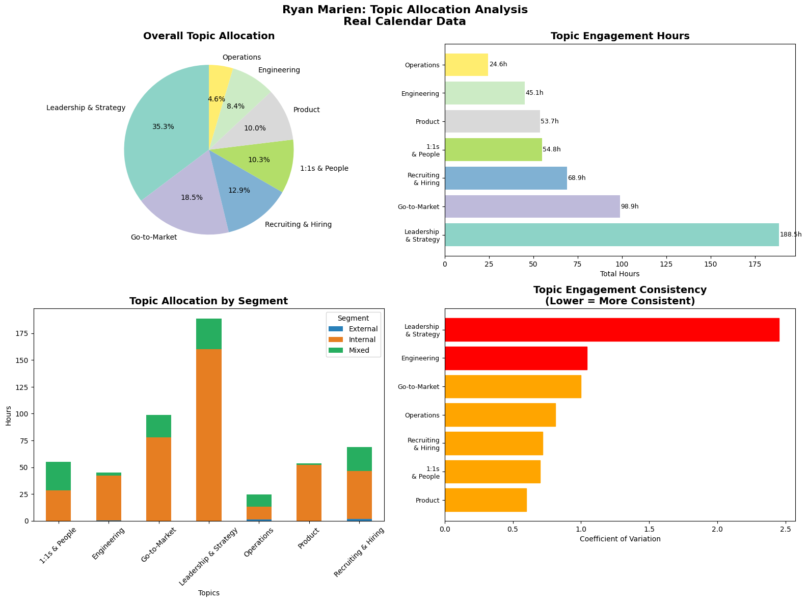
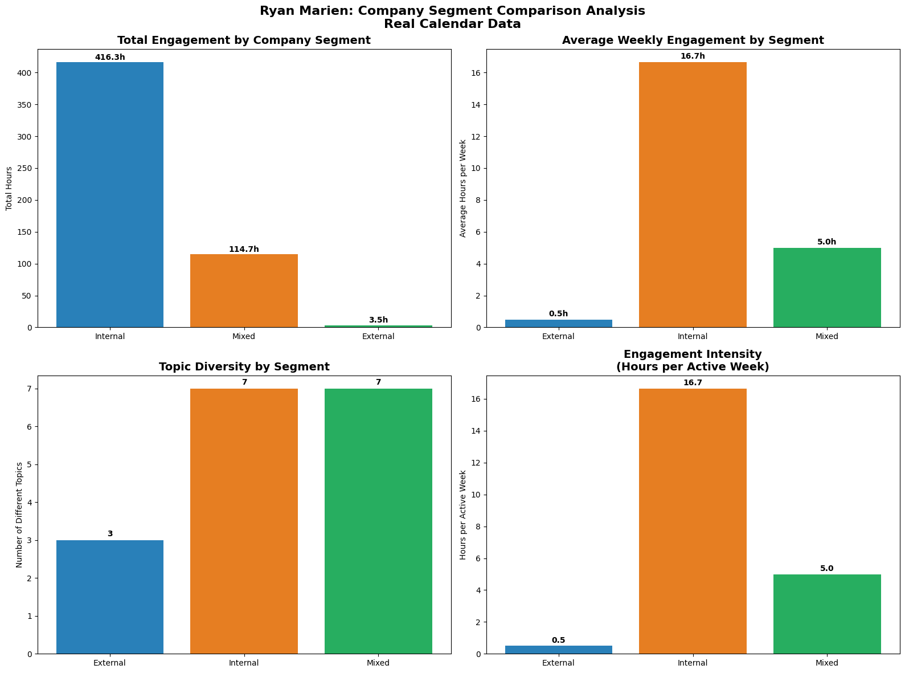
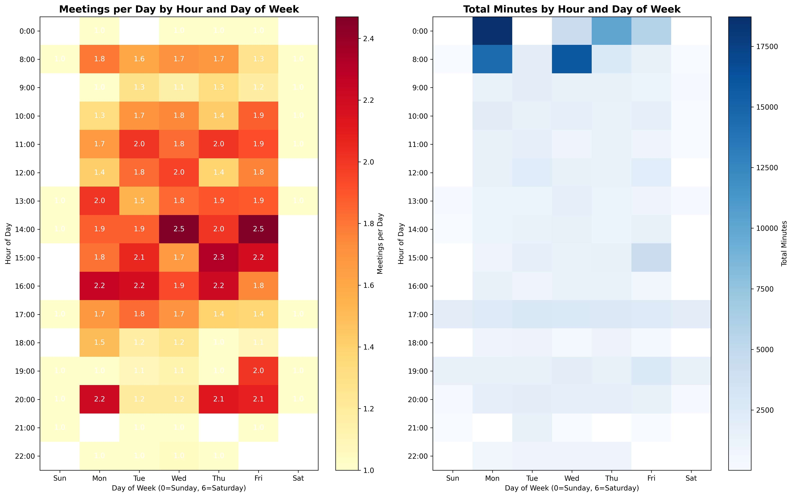
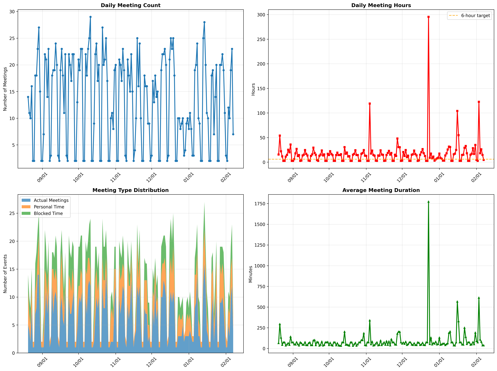
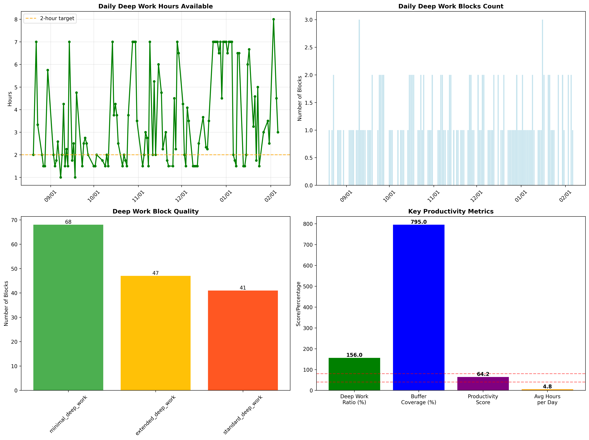
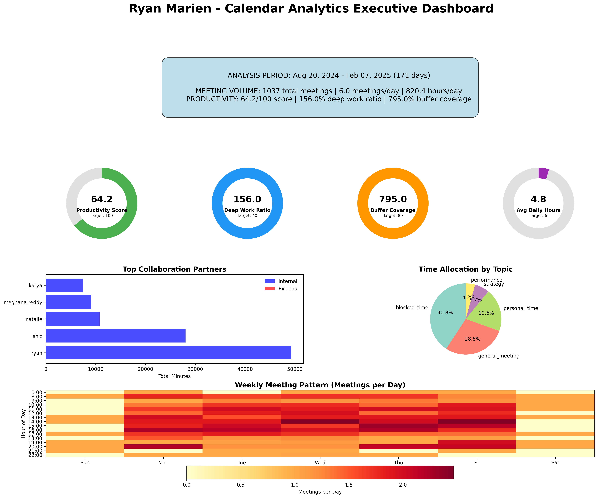

Executive Summary Dashboard
Complete overview of time allocation

Weekly Engagement Timeline
25-week activity patterns
Interactive

Topic Allocation Analysis
Meeting focus areas breakdown

Company Segment Analysis
Internal vs External vs Mixed
Key Executive Insights
Meeting Distribution
- Leadership & Strategy: 35.3% of business time
- Go-to-Market Focus: Consistent engagement (98.9 hours)
- Internal Collaboration: 89.2% of meeting time
Time Management
- Deep Work Protected: 33.6% of time (414.3 hours)
- Sustainable Pace: 6 meetings/day average
- Network Scale: 366 collaboration partners
Topic Engagement Distribution
Topic Breakdown (Hours)
Leadership & Strategy:
188.5h
Go-to-Market:
98.9h
People & 1on1:
54.8h
Product:
53.7h
Recruiting:
68.9h

Weekly Load Heatmap
Meeting density patterns by day/hour
Interactive

Meeting Volume Time Series
6-month trend analysis
Interactive

Deep Work Protection Analysis
33.6% protected time (Good)

Calendar Executive Dashboard
Comprehensive calendar insights
366
Total Collaborators
160 internal, 206 external
84.8%
Internal Collaboration
Strong team focus
100%
Buffer Coverage
64.2 min average buffer
Top Collaboration Partners
Collaboration Insights
- Excellent Buffer Management: 100% coverage (64.2 min avg)
- Strong Internal Focus: 84.8% of collaboration time
- Sustainable Meeting Load: 6.0 meetings/day average
- Network Breadth: 366 unique collaborators
- High Concentration: Focused on key partners
- Delegation Level: 81.5% (High delegation)